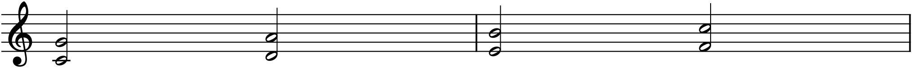
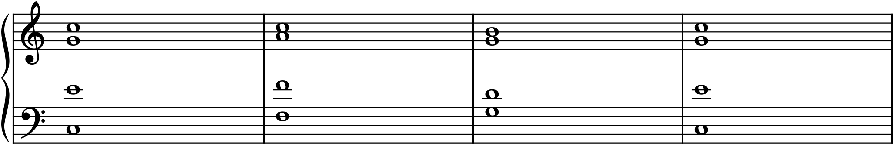

Until now a chord has been a block — three or four notes stacked and struck together. This chapter takes the same chords apart into four independent melodic lines, sounding together, each a singable voice with a shape of its own. This is the discipline of four-part writing, and it is taught with the sound it was invented for: the four-voice chorale, SATB — soprano, alto, tenor, bass. The rules you learn here are not chorale trivia; they are the grammar of voice leading, and every time you write for two instruments, a string quartet, or an orchestra later in this book, you will be applying them.
14.1The four voices
Four-part texture uses four voices named for the singers who first carried them, from highest to lowest: soprano, alto, tenor, bass. Each keeps to a comfortable vocal range — roughly soprano C4–A5, alto G3–D5, tenor C3–G4, bass E2–C4 — and the four are written on a grand staff, soprano and alto sharing the treble clef, tenor and bass sharing the bass clef. To keep the lines visually distinct on a shared staff, the upper voice of each pair takes stems up and the lower takes stems down. The point of all of it is that each voice is heard as its own melody: four lines moving at once, not one chord thickened.
14.2Spacing and doubling
A triad has only three notes, but four-part texture needs four. So one note is doubled — sounded in two voices, usually at the octave. The safest default is to double the root, which is the strongest, most stable member of the chord; doubling the fifth is also fine, while doubling the third is usually avoided (and doubling the leading tone is a real mistake, for reasons in §14.5).
The vertical spacing of the voices follows one main guideline: keep adjacent upper voices — soprano-to-alto and alto-to-tenor — within an octave of each other. Wider gaps up top sound hollow. The bass, by contrast, may sit as far below the tenor as it likes; a big space between bass and tenor is normal and gives the texture a firm foundation. So the voices tend to bunch in the upper three and drop away to the bass.
14.3Voice leading
The heart of the craft is voice leading: connecting each chord to the next so that every voice moves as smoothly as possible. Three habits do most of the work:
- Keep common tones. If a note belongs to both chords, hold it in the same voice. (In C major, I and IV share the note C; V and I share G.)
- Move the other voices by the smallest step available — to the nearest note of the next chord, a step where possible, never leaping when a step will do.
- Favour contrary motion, especially between the bass and the upper voices. When the bass goes up, let the upper voices tend down, and vice versa; it keeps the four lines independent.
Follow these and the voices practically lead themselves. The bass is the one voice allowed — even expected — to leap, because it is carrying the roots of the progression; the inner voices, alto and tenor, should be the smoothest of all, often barely moving.
14.4The forbidden parallels
Two specific motions are avoided so strictly that they define the style by their absence: parallel fifths and parallel octaves. If two voices are a perfect fifth (or a perfect octave) apart and both move to another perfect fifth (or octave) in the same direction, they have moved in parallel perfect intervals — and the effect is that the two voices momentarily fuse into one. The whole point of four-part writing is four independent lines, and parallel perfects destroy that independence.

The parallel fifths in Figure 14.1 are the textbook mistake, and training yourself to see and hear them is a rite of passage. The cure is always the same: change one voice so the two are no longer moving in lockstep — give one of them a different interval to travel, or send it the opposite way (contrary motion, §14.3, never makes parallels). The same prohibition applies to octaves. Parallel thirds and sixths, by contrast, are perfectly fine and even lovely — the ban is specifically on the perfect fifth and octave, whose hollow purity is what makes the fusion audible.
14.5A few more rules
Three smaller conventions round out clean part-writing:
- Resolve the leading tone. The leading tone (7̂) leans up to the tonic (Chapter 7); when the dominant chord contains it — especially in an outer voice — let it rise to the tonic in the next chord. In a V–I, the voice holding the leading tone should step up to 1̂.
- Don’t double the leading tone. Because both copies would want to resolve up to the tonic, doubling 7̂ forces a parallel octave. Double the root instead.
- Don’t cross or overlap voices. Keep soprano above alto above tenor above bass at all times; a lower voice should not rise above where a higher voice just was. Crossed voices muddle who is singing what.
None of these are arbitrary fussiness — each one protects the clarity of four independent lines, which is the entire goal.
14.6A worked progression
Here is the I–IV–V–I of Chapter 12, realized in four parts with everything above obeyed:

Trace the voices in Figure 14.2 one at a time and you will see every rule at work. The bass carries the roots, leaping where it must. The soprano holds C across the first two chords, dips to the leading tone B for the dominant, and resolves up to C — a tiny, shapely line. The inner voices move as little as possible, keeping common tones and stepping smoothly. Nowhere do two voices run in parallel fifths or octaves. This is what “good voice leading” means in practice, and it is worth playing until the smoothness is something you can hear, not just verify.
In MuseScore
Four-part writing uses MuseScore’s voices — up to four independent lines per staff, colour-coded, with their own stem directions.
- Start from a template. File ▸ New offers a Choral ▸ SATB template (often a “closed score” grand staff). Or set up a piano grand staff yourself; either way you will put two voices on each staff.
- Enter one voice at a time. In note input, the toolbar’s Voice buttons (or Ctrl+Alt+1…4) choose which voice you are writing. Enter the whole soprano line as Voice 1 on the treble staff, then go back to the start and enter the alto as Voice 2 — MuseScore stems Voice 1 up and Voice 2 down automatically. Do the same for tenor (Voice 1) and bass (Voice 2) on the bass staff.
- Audit each line with the Selection Filter (F6): un-check the other voices to isolate and play just one, checking that each is a smooth, singable melody on its own.
- To catch parallels, play slowly and watch the outer voices — soprano and bass — since that is where fifths and octaves are most audible and most forbidden.
Try it: recreate the progression in Figure 14.2 — bass C–F–G–C, soprano C–C–B–C, and the inner voices filling in — and play it. Then, on purpose, rewrite the alto and tenor so two of them move in parallel fifths, and play it again. The clean version sounds like a small choir; the parallel version sounds like the choir suddenly lost a singer. That audible collapse is why the rule exists.